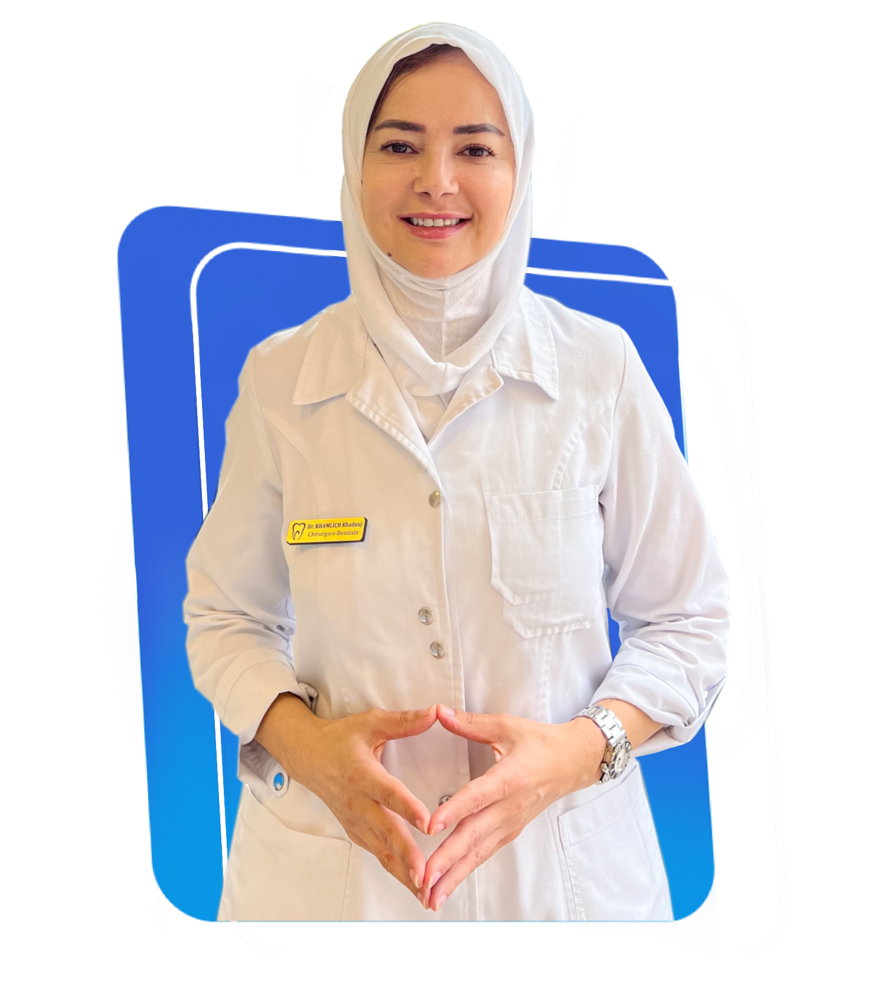
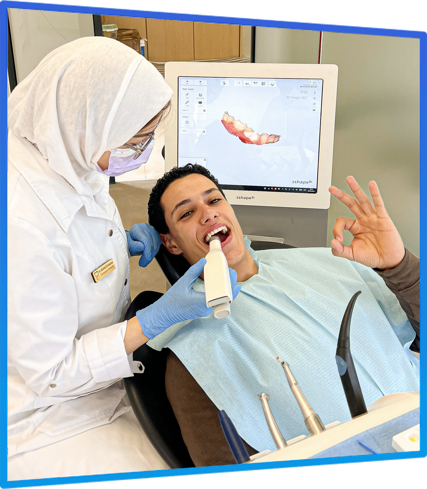

Bagues Métalliques & Céramique
Retrouvez le plaisir de sourire
Découvrez nos 4 solutions d'alignement des dents, de la plus visible à la plus discrète.
-
200 Dhs
1ère consultation + devis
-
Dès 12 500 Dhs
Par mâchoire
-
18-24 mois
durée moyenne
-
Paiement
En plusieurs fois
Réservation en 2 minutes, sans engagement.

- Solution discrète : céramique transparente
- Tarifs affichés, devis avant de commencer
- Paiement échelonné sur la durée
- Contention finale incluse
Vous cachez vos dents quand vous souriez ?
Ce qui change au bout du traitement
Aujourd'hui
- Vous souriez bouche fermée, ou la main devant.
- Les dents du bas se chevauchent un peu plus chaque année.
- Vous vous dites « c'est trop tard », ou « c'est trop cher ».
Dans 18 à 24 mois
- Des dents alignées, et un sourire que vous montrez enfin.
- Moins de caries et de gencives qui saignent.
- Un résultat maintenu à vie par le fil de contention.
18 à 24 mois, ça passe vite — mais ça ne commence pas tout seul. La majorité de nos patients adultes nous disent la même phrase : « j'aurais dû le faire il y a dix ans ».
4 solutions
Quel appareil choisir ?
Toutes alignent les dents. Elles se distinguent sur la discrétion, le confort et le prix.
Faites défiler pour comparer les 4 solutions
Nos Avant-Après
Des cas traités ici, à Rabat Agdal
Patients de la Clinique Dentaire Arribat. Photos non retouchées.
Faites défiler pour voir tous les cas
-

Cas N°1
• Bagues
-

Cas N°2
• Bagues
-

Cas N°3
• Bagues en céramique • Blanchiment
-

Cas N°4
• Béance corrigée
-

Cas N°5
• Bagues
-

Cas N°6
• Canine incluse • Bagues
-

Cas N°7
• Bagues • Blanchiment
-

Cas N°8
• Bagues
Comment ça se passe, concrètement
-
Consultation & bilan — 200 Dhs
Examen, radiographies, photos et empreintes numériques 3D. Le Dr Khamlich vous explique les options possibles dans votre cas précis et vous remet le devis chiffré le jour même.
-
Pose de l'appareil
Séance d'environ une heure, sans piqûre ni fraise : les brackets sont simplement collés sur vos dents.
-
Réglages tous les 1 à 2 mois
Des rendez-vous courts pour activer l'appareil et suivre la progression. Avec l'autoligaturant, ils sont plus espacés.
-
Dépose & contention — incluse
L'appareil est retiré et un fil très fin est collé derrière les dents pour verrouiller le résultat à vie.
La contention est comprise dans le tarif. C'est l'étape que beaucoup négligent, et sans laquelle les dents reviennent lentement à leur position d'origine — traitement perdu.
Ce qui vous retient encore
Les 4 objections qu'on nous pose le plus
« Je n'ai pas cette somme d'avance »
Vous n'en avez pas besoin. Le règlement est échelonné sur toute la durée du traitement, soit 18 à 24 mois de mensualités. Le montant et le rythme sont fixés avec vous le jour du devis, et ils ne bougent plus ensuite.
« Je ne veux pas qu'on voie que j'ai un appareil »
C'est le cas de la majorité de nos patients adultes. Les brackets en céramique sont de la couleur de la dent et ne se remarquent pas à un mètre de distance — la solution la plus discrète pour un adulte actif.
« C'est trop long, et trop tard pour moi »
L'orthodontie n'a pas de limite d'âge : nous traitons régulièrement des patients de 30, 40 et 50 ans. La durée exacte vous est annoncée dès la consultation, radios à l'appui — et un alignement léger se règle parfois en 8 à 12 mois.
« Il va y avoir des suppléments »
Le devis remis à la consultation est ferme : réglages, dépose et contention compris. Si votre cas nécessite un soin annexe (une carie, une extraction), c'est annoncé et chiffré avant de commencer — jamais découvert en cours de traitement.
FAQ
Vos questions sur l'orthodontie
-
Cela dépend de l'appareil choisi. Les brackets métalliques sont à 12 500 Dhs par mâchoire, soit 25 000 Dhs pour le haut et le bas. Les brackets métalliques autoligaturants et la céramique transparente sont à 17 500 Dhs par mâchoire. La céramique autoligaturante est à 22 500 Dhs par mâchoire. La consultation avec bilan et devis coûte 200 Dhs, et le règlement peut être échelonné sur toute la durée du traitement.
-
Oui. Le règlement est échelonné sur la durée du traitement, ce qui revient concrètement à des mensualités étalées sur 18 à 24 mois. Vous n'avez donc pas à avancer la totalité au départ. Les modalités exactes sont définies avec vous le jour de la consultation, en même temps que la remise du devis, et elles n'évoluent plus ensuite.
-
Oui. Ce que l'on appelle couramment « bagues transparentes », ce sont les brackets en céramique : ils sont de la couleur de la dent et passent quasiment inaperçus à un mètre de distance, contrairement aux brackets métalliques. Comptez 17 500 Dhs par mâchoire en version classique, et 22 500 Dhs en version autoligaturante.
-
En moyenne 18 à 24 mois. Un alignement léger peut se régler en 8 à 12 mois, tandis qu'un cas complexe avec décalage des mâchoires ou extractions peut demander jusqu'à 30 mois. La durée exacte vous est annoncée dès la consultation, après l'étude de vos radiographies — vous ne partez pas dans l'inconnu. Les techniques autoligaturantes permettent souvent de raccourcir la durée totale en espaçant les rendez-vous de réglage.
-
La pose de l'appareil n'est pas douloureuse : c'est une séance de collage, sans piqûre ni fraise. Dans les 2 à 3 jours qui suivent la pose et chaque réglage, il est normal de ressentir une gêne à la mastication, le temps que les dents commencent à bouger. Un antalgique simple suffit largement et la sensation disparaît rapidement. Les techniques autoligaturantes, qui appliquent des forces plus légères, sont généralement décrites comme nettement plus confortables.
-
Dès 6 à 7 ans, un premier bilan est recommandé : à cet âge, on peut guider la croissance des mâchoires et éviter des traitements plus lourds plus tard. La période idéale pour un traitement complet reste l'adolescence, lorsque toutes les dents définitives sont en place. Cela dit, l'orthodontie n'a pas de limite d'âge : nous traitons régulièrement des adultes de 30, 40 ou 50 ans, généralement avec la céramique pour une solution discrète.
-
Pas systématiquement, et de moins en moins souvent. L'extraction n'est envisagée que lorsqu'il manque réellement de place sur l'arcade pour aligner toutes les dents. Beaucoup de cas se traitent aujourd'hui sans extraction, grâce à des techniques d'expansion ou de recul molaire. Cette décision est prise après l'analyse complète de vos radiographies et vous est expliquée clairement avant de commencer — jamais en cours de route.
-
C'est une étape essentielle et trop souvent négligée ailleurs : la contention. Après la dépose, un fil très fin est collé derrière les dents et une gouttière de nuit vous est remise pour maintenir le résultat. Sans cette contention, les dents ont naturellement tendance à revenir vers leur position d'origine et le traitement est perdu. Elle se porte plusieurs années, et son suivi fait partie intégrante de votre traitement chez nous — il n'est pas refacturé à part.
-
Le devis remis lors de la consultation à 200 Dhs est ferme pour le traitement décrit : les rendez-vous de réglage, la dépose et la contention y sont compris. Les tarifs affichés sur cette page sont des tarifs de référence, qui peuvent être ajustés à la hausse comme à la baisse en fonction de la complexité réelle de votre cas — mais cet ajustement est fait avant de commencer, sur le devis, pas après. Seuls des soins annexes non liés à l'orthodontie (une carie à traiter, une extraction) feraient l'objet d'une ligne distincte, annoncée elle aussi à l'avance.
-
Oui, à quelques exceptions près. Avec des bagues, il faut éviter les aliments très durs (noix, glaçons, pain très croustillant) et très collants (caramels, chewing-gums), qui peuvent décoller un bracket. Coupez les pommes et les carottes en morceaux plutôt que de croquer dedans.
Réserver mon bilan orthodontie
Tout commence par un bilan de 200 Dhs
Réservez en ligne 24h/24, ou appelez-nous pendant les heures d'ouverture.
200 Dhs
bilan complet + devis chiffré remis le jour même
- Choisissez « Consultation » et votre créneau
- Confirmation immédiate, sans création de compte
- Radios, options possibles et prix ferme le jour même
- Vous repartez avec le devis, sans obligation de commencer
- Sans engagement
- Réservation 24h/24
- Paiement échelonné
Vous hésitez encore entre métallique et céramique ? C'est exactement ce que le bilan tranche. Venez avec vos questions — vous repartez avec une réponse claire et un prix, pas avec un devis à rallonge.
Infos pratiques
-
Téléphone
+212 6 11 38 11 11 -
Horaires
Lundi – Vendredi : 9h00 – 18h00
Samedi : 9h00 – 13h00 -
Itinéraire
Obtenir l'itinéraire -
WhatsApp
Nous écrire sur WhatsApp
Prendre rendez-vous
Dans 24 mois, vous aurez soit des dents alignées, soit les mêmes dents
Bilan à 200 Dhs, devis ferme le jour même, paiement échelonné. Réservez en ligne en 2 clics, ou appelez-nous pendant les heures d'ouverture.

Qui sommes-nous ?
Au sein de la Clinique Dentaire Arribat
Inaugurée en 2024, la Clinique Dentaire Arribat réunit une équipe de dentistes pluridisciplinaires de renommée, dédiée à votre santé bucco-dentaire. Dotée d'équipements de dernière génération et des technologies les plus avancées, notre clinique garantit des soins personnalisés dans un cadre moderne et accueillant. Offrez à votre sourire le meilleur en nous confiant votre bien-être dentaire.
- Empreinte numérique 3D
- Équipe pluridisciplinaire
- Sédation consciente disponible
Nous proposons également
Le Dr Khamlich couvre l'ensemble des soins dentaires.
-
Blanchiment dentaire
3 500 Dhs
la séance d'1 heure
• Détartrage offert (valeur 500 Dhs)
En savoir plus
• Résultat immédiat, une seule séance
Souvent réalisé juste après la dépose des bagues. -
Facettes en céramique
4 000 Dhs
l'unité — 30 000 Dhs les 8
• Alternative rapide quand le décalage est léger
En savoir plus
• Hollywood Smile dès 30 000 Dhs -
Implant + prothèse
10 000 Dhs
par implant
• Implant en titane, pilier et couronne inclus
En savoir plus
• Parfois posé après l'orthodontie, une fois la place ouverte
-
Soins courants & conservateurs
• Détartrage & nettoyage dentaire
• Traitement des caries & plombage
• Dévitalisation (traitement de racine)
• Traitement des infections & abcès -
Radiologie & dentisterie digitale
• Radio panoramique dentaire
• Scanner 3D
• Empreinte optique 3D sans pâte
• Simulation du sourire avant traitement -
Chirurgie dentaire
• Extraction dent de sagesse
• Dents incluses & traction chirurgicale
• Chirurgie de la gencive au laser
• Gingivectomie & sourire gingival -
Parodontie (soins des gencives)
• Saignement des gencives
• Traitement de la parodontite
• Curetage & surfaçage
• Déchaussement & dents mobiles -
Sédation consciente
Vous avez la phobie du dentiste, découvrez des soins dentaires apaisants et confortables grâce à notre expertise en sédation consciente, pour une relaxation totale lors de votre traitement